My own direct-to-consumer brand · Shopify + Klaviyo
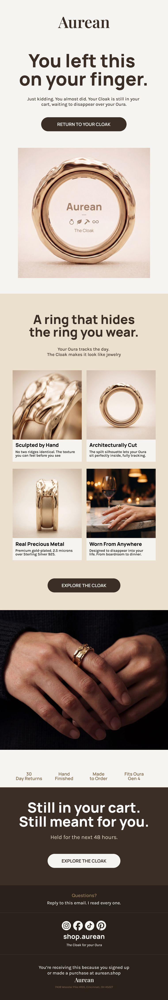
A sterling silver and gold-plated cover for the Oura Ring. The cart email had to do the
job a product page normally does, because the object needs explaining before it makes sense.
The headline opens on a joke that only works if you own the product. Under it, a four-up
grid answers the four objections that actually stall the purchase: how it is made, how it fits,
what it is made of, and where you can wear it. A trust bar carries returns, finishing, and
compatibility. The close is the only place urgency appears.
Written, designed, and built by me, along with the rest of the brand.
Creamalicious — welcomeConcept
Concept work, not a client engagement · Chef-founded ice cream brand
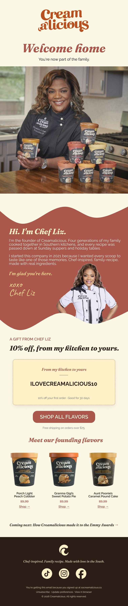
A welcome email built around the founder rather than the product, because the founder
is the product in a chef-led food brand. Her story runs before any offer appears.
The discount is framed as a gift from her kitchen rather than a promotion, and the code
reads as a sentence instead of a string. Founding flavors sit below the offer with prices
visible, so nobody has to click to find out what things cost. It closes on a forward-look
line that gives the next email a reason to be opened.
Windy Weatherfoot — welcomeConcept
Concept work, not a client engagement · Animated children’s series
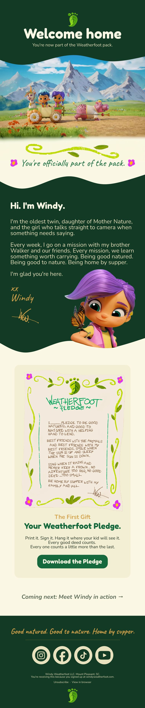
Kids media has two readers: the child it is about and the parent who actually opens the
inbox. This one is written in the character’s voice to the child, while every practical
instruction is aimed at the adult.
Instead of a discount, the welcome gift is a printable pledge the kid signs and hangs up,
which gives the parent a reason to keep the email and puts the brand on a wall. The palette
and hand-drawn type come from the show itself rather than from an email template.
myReturners
A 14-template lifecycle program running in production
Co-founded 2026 · I designed and built the product · myreturners.com
A retention platform for independent coffee shops. Every shop runs its own branded
email program out of one multi-tenant system, on its own authenticated sending domain. I built the
templates, the trigger logic, the consent and suppression layer, and the infrastructure underneath.
Live renders from the system. Every one is live text, not sliced images, so they survive
images-off and dark mode, and each renders the customer’s real card state at send time.
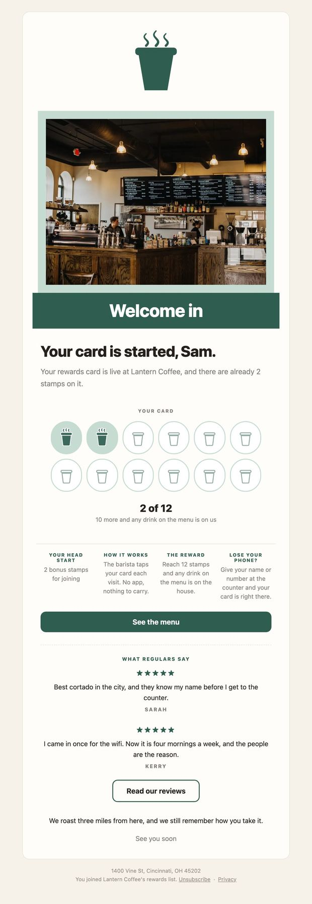
WelcomeFires the moment someone signs up. Starts their card at 2 of 12 so the first visit already feels like progress.
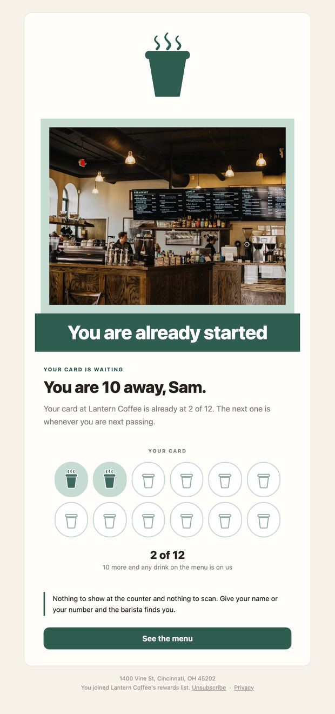
Second visitThe visit that predicts everything. Retention is decided here, so this one gets its own moment.
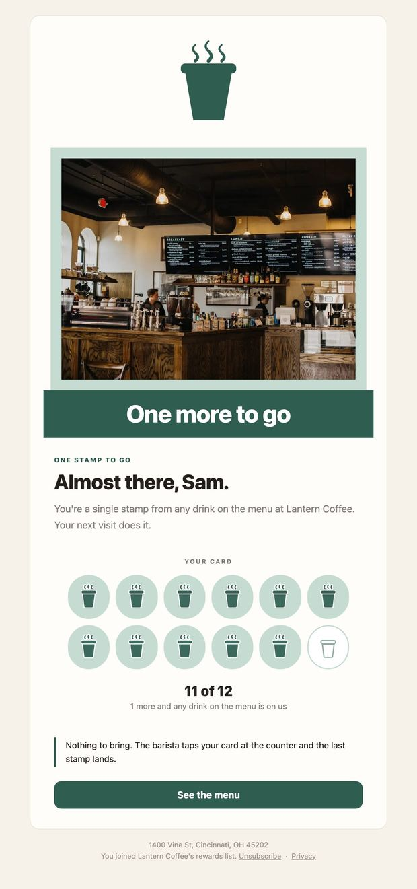
One awayTriggered at 11 of 12. The single highest-intent send in the program.
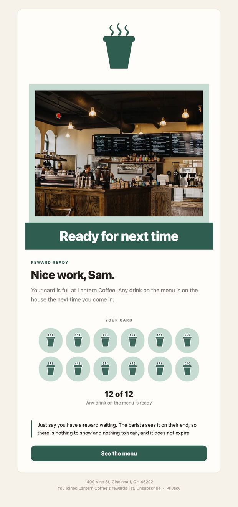
Reward readyCard complete. Plain, short, and gets out of the way.
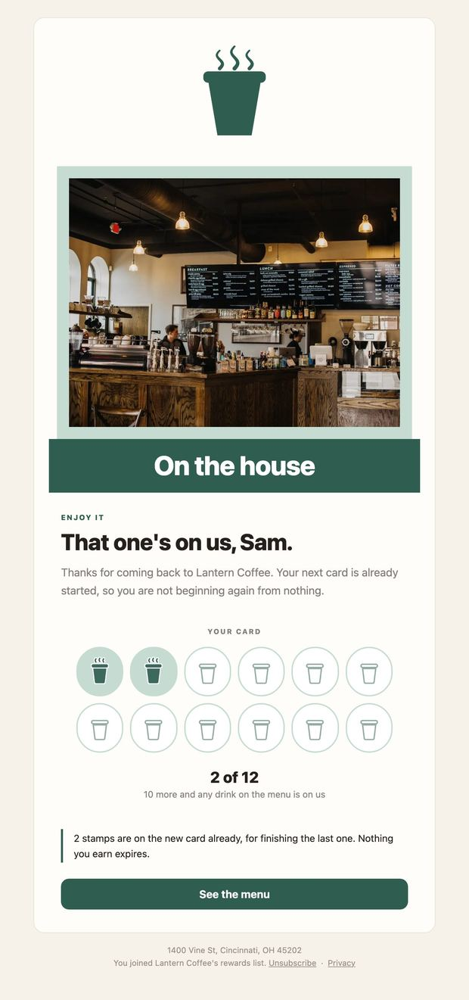
Next cardResets the loop right after a reward is claimed, so momentum carries.
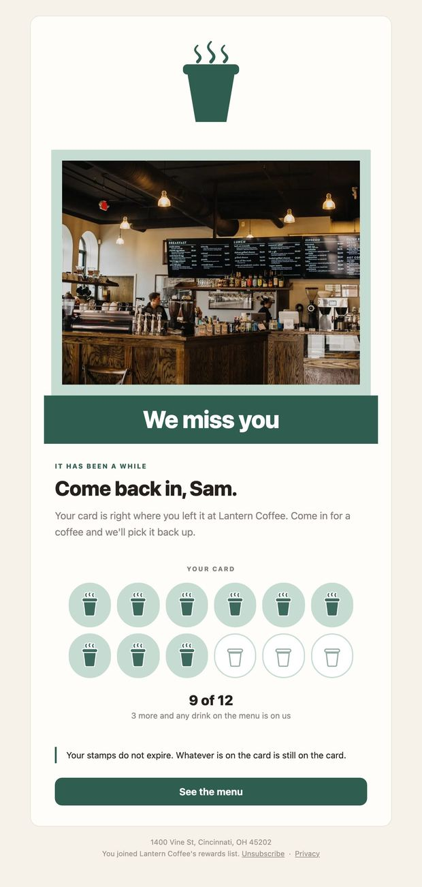
Win-backLapsed after a set window. Shows exactly where they left off.
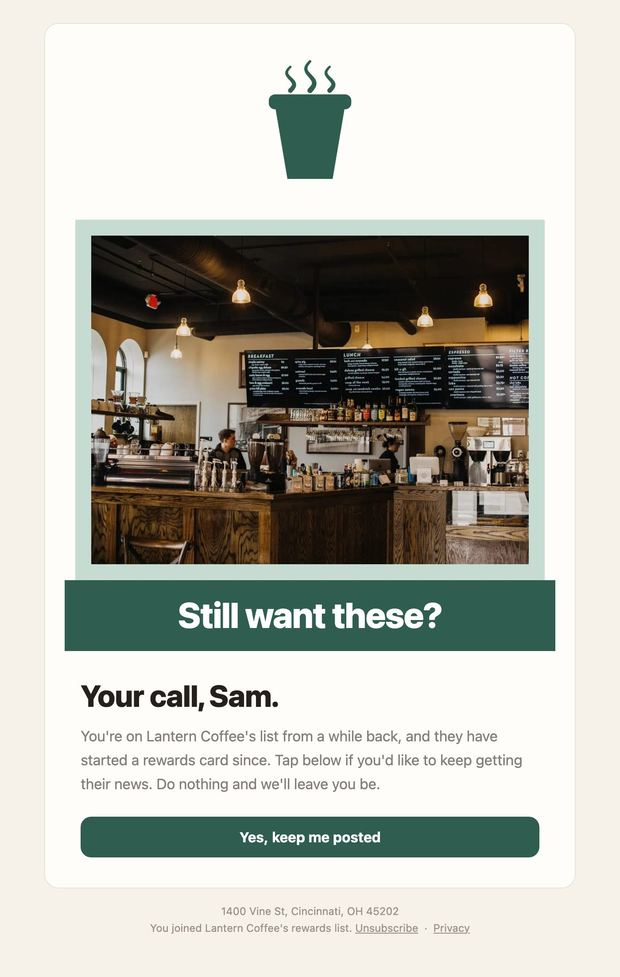
Re-engagementSent in daily slices of 40 to imported lists, never blasted, to protect sending reputation.
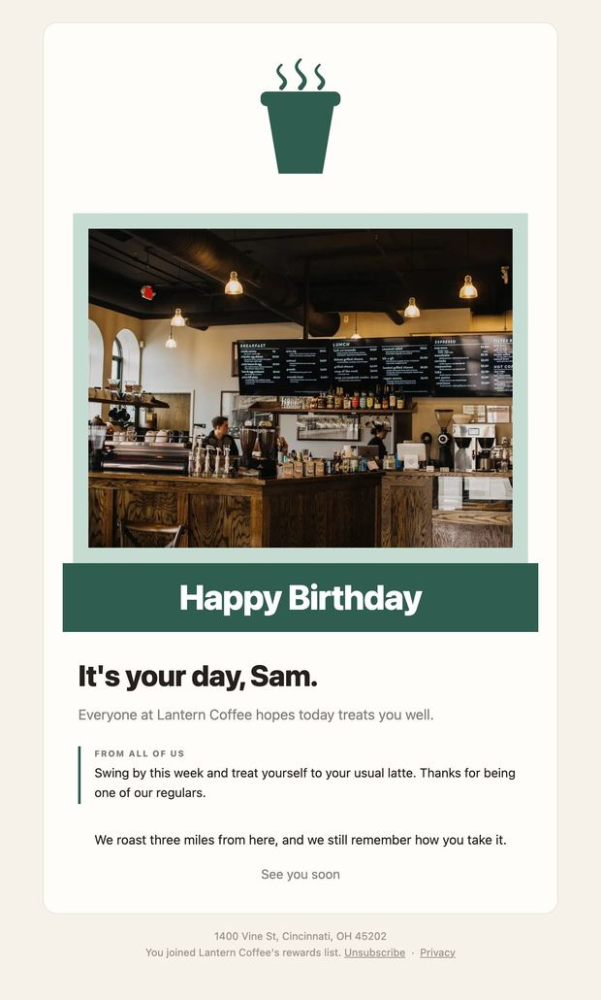
BirthdayBeats win-back in the daily sweep so nobody gets both.
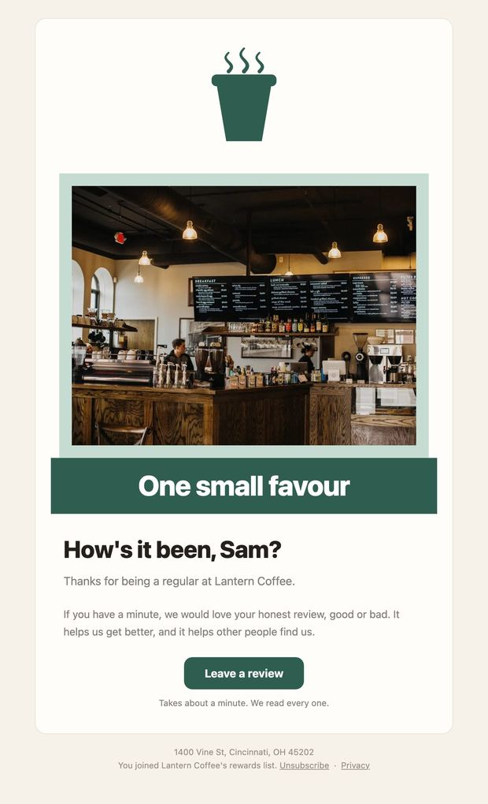
Review inviteTargets the location the customer actually visits most, and stays even-handed about the ask.
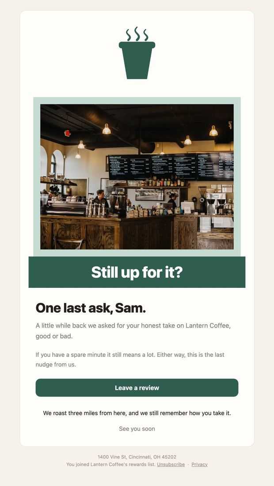
Review follow-upOne reminder, ever. Only if the invite was delivered and never opened.
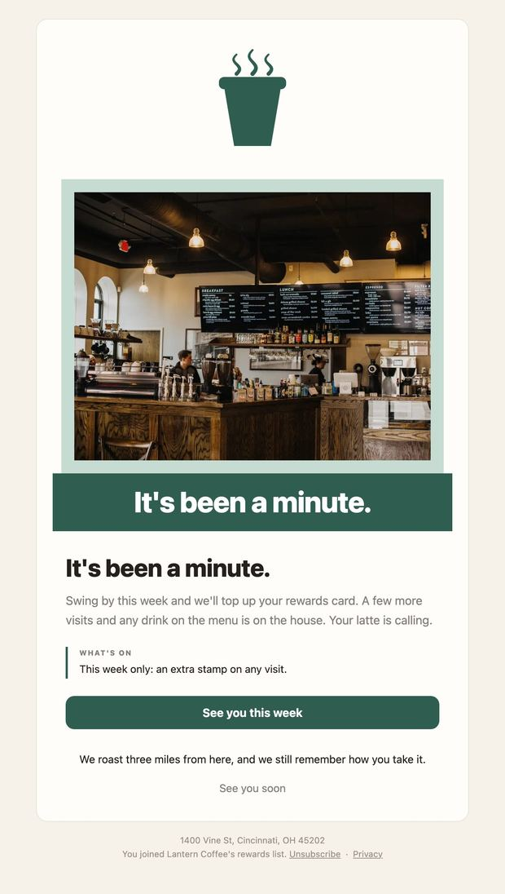
Monthly campaignOwner-approved, one a month, capped by a 48-hour per-contact frequency rule.
What sits underneath
Per-client sending domains with SPF, DKIM, and DMARC, plus live DNS verification before a shop goes live.
Automated deliverability alerting against 2% bounce and 0.1% complaint thresholds, with a small-sample floor so it never guesses a verdict.
Consent capture at signup, one-click unsubscribe, and one central suppression list that bounce and complaint records can never be lifted from.
A 48-hour per-contact frequency cap on marketing sends, so nobody gets two in a day.
Behavioral segmentation behind every trigger: visit count, stamp position, recency, and location.
Aurean, the whole program
2026 · Founder · Shopify + Klaviyo
Grew the pre-launch list from zero to 412 subscribers with no ad spend and no existing
audience, through organic Reddit and Facebook community posts that drew over 200,000 views. One post
reached 120,000 on its own.
Built the full Klaviyo program: welcome, abandoned cart, browse abandonment,
post-purchase, and win-back, with segmentation and personalization by browse and purchase behavior.
Authenticated the sending domain via DNS with SPF, DKIM, and DMARC before the first send.
Wrote every campaign, flow, and product page, and directed all photography.
Aurean wound down in 2026. Klaviyo flow-builder and campaign-performance
screenshots available on request.